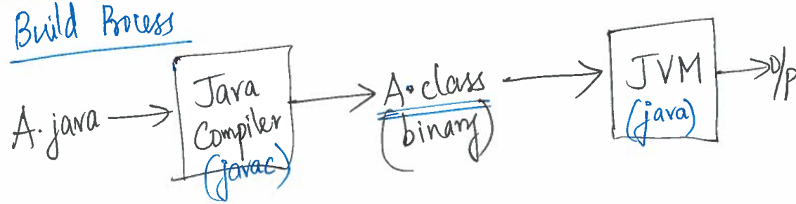

14.1 — Building Code
So we’ll be using tools to run your Java code within this online textbook, but how would you actually run Java on your computer?
Let’s say you’ve written some code in a file called A.java. This code is human-readable, meaning you can understand all the instructions in the code, and we call this source code. But a computer can only understand instructions in binary code. Binary code is a neatly compressed version of your code in binary (0s and 1s) that machines are able to execute, but it’s not very human-readable. The process of converting human-readable code to machine-readable code is called building or compiling, and the program that does this for you is called the Java compiler.
To use the Java compiler to build your source code, we have to use the terminal. The terminal is a text-based interface that you can use to run different types of commands on your computer. The $ symbol in the terminal is the prompt indicating that the terminal is ready for you to type a command into it. One example of a terminal command is the ls command, which we use to see what files there are in the current directory (folder). So typing this command into the terminal and pressing Enter:
$ ls
would show you that you have the A.java file in the current directory (along with some other files probably).
The command for the Java compiler is the javac command. In order to use this command, we write out the name of the file we want to compile after the command. This is an example of an argument to the command. Think of arguments as inputs to the program that the command runs.
$ javac A.java
After this command runs, you will see that the compiler has created a file called A.class. You can use the ls command to verify that the A.class file is created. This file contains binary code corresponding to the source code in your A.java file. If you try to look into the file you might see a lot of nonsense or your file viewer might refuse to display the contents, because it can’t render the contents in any meaningful way.
In order to run the compiled code, we need to feed the file into the Java Virtual Machine (JVM). To do this, you run the following java command in the terminal. Note that we do not give A.class as an argument to the command. We do this because the java command is looking to run the program corresponding to a class name, not the name of the .class file.
$ java A
Whenever we make changes to the code in A.java, these changes are not automatically updated in A.class, so we must recompile the code with javac again in order to run the program with these changes.
In short, we use the javac command to compile a source code file into a binary code file, then we use the java command to run the binary code.

But to make things easier for you, we’ve created a script called run that you can use to compile and execute code in one command. The inside of this script looks like this:
#!/bin/bash
if [ $# -eq 0 ]; then
echo "Please provide the class name. For instance: ./run DesignRecipeExamples";
exit;
fi;
CLASSNAME=$(echo $1 | cut -f 1 -d '.')
rm *.class &> /dev/null;
javac -cp lib/tester.jar *.java &&
java -Djava.security.manager=disallow -classpath lib/tester.jar:. tester.Main $CLASSNAME
This is mostly complete nonsense at this point, and we won’t be covering what most of these things actually mean in this textbook. But you can see in the last two lines where we use the javac command to compile code, and then use the java command to run code.
If you have a source code file called A.java that you want to compile and execute with the run script, you can use this command:
$ ./run A.java
Summary
- We can use the
javaccommand to compile source code into binary code. - We can use the
javacommand to execute binary code. - Our
runscript can compile and execute a source code file in one command.